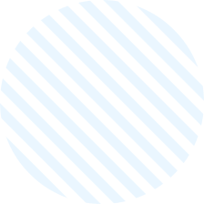

活動資訊

展覽日期：6/10（六）- 6/13（二）
展覽地點：星星路99號
地址：
台北市大安區忠孝東路四段97號3樓28室
前往方式：
捷運忠孝復興/忠孝敦化站 步行約6分鐘
展覽費用：
每人酌收 50元入場費
展覽時間：
6/10-11採線上表單預約制！
#以1小時為區間，每日共六個時段
#每一時段可容納20人
❶ 13:30-14:30
❷ 14:30-15:30
❸ 15:30-16:30
❹ 16:30-17:30
❺ 17:30-18:30
❻ 18:30-19:30
預約表單連結
＃應援計劃 Birthday Supporting Project
泰國應援部分 ，
將於Gemimi生日時經由Gem泰站（IG @Geminintfamily）協助，
致送零食蛋糕到Gemini生日慶生指定會場。
也歡迎Khunnoo提供手寫卡片，
台站將於6月底統一帶至泰國，
交由Gem泰站轉交給Gemini。
#手寫卡片請於生日展6/10-6/11交給台站人員
（只有收這兩天唷！）
台灣集資部分，
因此次有生日特展與泰國應援兩個活動，
金額支出較高、希望Khunnoo能一起集資，
展場將設置募款箱，
並有小小的募資禮作為答謝，
歡迎大家踴躍支持，讓應援能夠持續下去！
應援禮介紹
敬請期待
什麼！？妳有為Gemini的生日製作應援物嗎？
我們打算募集大家製作的應援物放在展場內
讓粉絲們能一次收穫滿滿的應援物ᦂ
有意製作應援物的各位歡迎私訊我們！
誠摯邀請您的加入!
Support By Gemini 台灣粉絲站

|